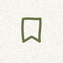

Stash — Support
Share a link from Safari, YouTube, Spotify or any app using Save to Stash in the Share Sheet, or tap + in the app and paste a link.
Where is my data?
Only on your iPhone. Stash has no account and no server. If you delete the app, your saved links go with it.
A link saved without a title or picture.
Some sites don’t share a preview. You can edit the title, category, note and tags any time from the … menu on the link.
How do I pin or get a random link?
Swipe a link to the right (or long-press it) to pin it to Up next — up to three. Filter by a tag, then tap the dice for Surprise me.
I don’t see Stash in the Share Sheet.
Scroll the app row of the Share Sheet to the end, tap More, and switch on Save to Stash.
Still stuck?
Open an issue on GitHub or message me on LinkedIn, and I’ll get back to you.